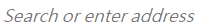
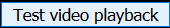

def launch_nightly(): try: App.close("Nightly") except: pass try: App.close("Mozilla Firefox") except: pass App.open("C:\\Program Files\\Nightly\\firefox.exe") try: wait(, 3) pass except: print(' Wait for awesome bar, 1st failure, create a new tab.') click() try: wait(, 3) pass except: print(' Wait for awesome bar, 2nd failure.') launch_nightly() click() type("https://kilikkuo.github.io/H2TPServer/frame_drop_test") type(Key.ENTER) wait(, 3) click() wait(300) s = Screen() result_region = Region(0,0,537,880) saved_img = s.capture(result_region) import os from datetime import date import shutil today = date.today() shutil.copy(saved_img.getFilename(), os.path.join(os.environ["HOMEPATH"], "Desktop\\dropped_frame_test_result_" + today.isoformat() +)) App.close("Nightly")